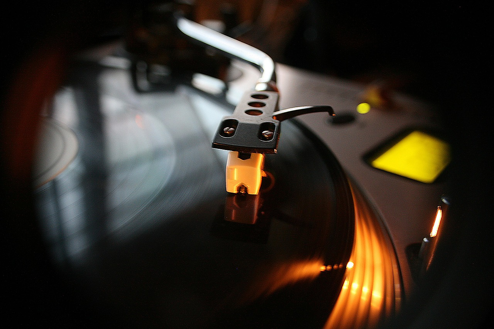

Trap
Emerging out of the Southern United States, trap music is the most popular genre of rap in today. However, it wasn't always this mainstream.
The trap subgenre dates back to the mid-1990s. Early trap producers such as DJ Spanish Fly, DJ Toomp,
Shawty Redd and DJ Paul began shaping the new genre with their dark, gritty sounds and heavy use of 808 drum machines.
This contrasted with the more upbeat, more acoustic, funk-influenced sounds of other rap subgenres at the time.
The term "trap" refers to places where drug deals happen (I know, not very school appropriate, but it's true), and the lyrics often reflect on the challenges of living that life.
Early trap artists like Gucci Mane and Young Jeezy for example, often talked about their lives in the "trap" and the struggle that came with it.
Trap music rose to mainstream popularity in the 2000s. T.I. and
2 Chainz from Atlanta were some of the first trap artists to achieve mainstream success, with T.I.'s 2003 album "Trap Muzik" being a big milestone for the
genre. In addition, Rick Ross and T-Pain from Florida helped bring mainstream attention to the genre, with T-Pain inspiring the modern auto-tuned style of trap we
commonly hear nowadays. The Canadian rapper Drake brought pop/RnB influenced melodies to the genre as well, making his own unique sound.
Also, Three 6 Mafia incorporated trap elements into a lot of their work during the early 2000s, helping popularize the sound even more.
Their dark, eerie beats and aggressive lyrics were a big influence on the trap genre.
In the 2010s, trap music continued to evolve. Artists like Future, Migos, and Young Thug pushed the boundaries of the genre with their unique styles and sounds. The use of autotune became more and more common,
and the instrumentals often featured more melodic sounds combined with the traditional heavy textures.

Today, trap music is one of the most popular genres of music in the world, with artists like Travis Scott, 21 Savage, and Lil Baby achieving massive success. Trap producers have also gotten quite popular, notably the Atlanta-based producer Metro Boomin.
The genre has also influenced other music styles, including pop and electronic dance music (EDM), and even has its own subgenres within itself.
Some newer subgenres of trap include Drill, which started in Chicago and uses darker, more aggressive sounds and lyrics, and Rage, which incorporates elements of punk rock, EDM and heavy metal into trap music.
In conclusion, trap music has come a long way since its origins in the mid-1990s. From its gritty beginning to its current mainstream success, trap has become a very dominant force in the music industry. Its evolution will continue as many new artists bring fresh new ideas and sounds to the genre.
Recommended Trap Albums
Rodeo by Travis ScottAmerican Dream by 21 Savage
Trap Muzik by T.I.
DS2 by Future